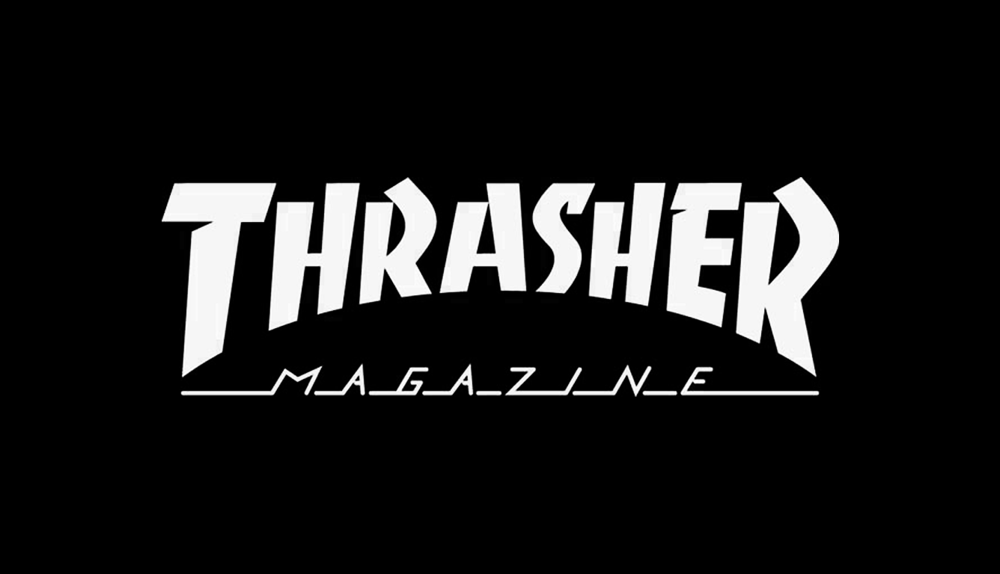
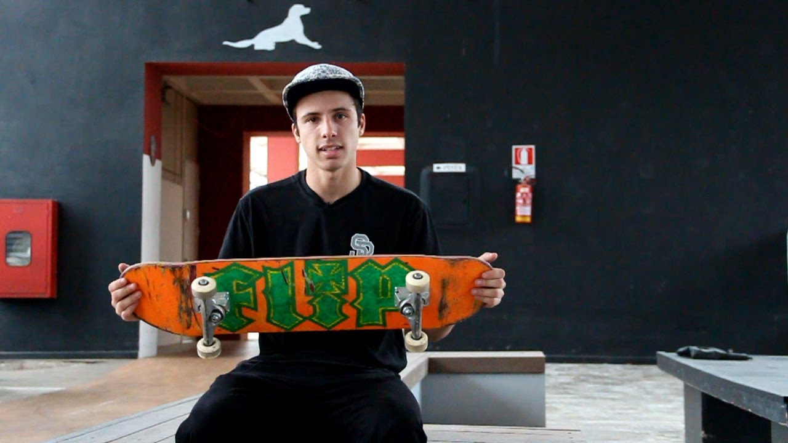
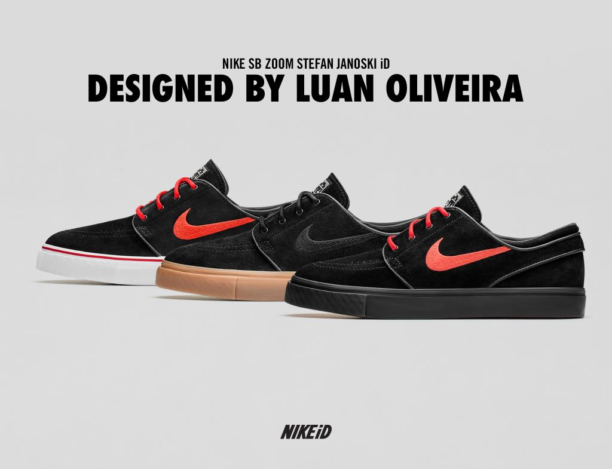
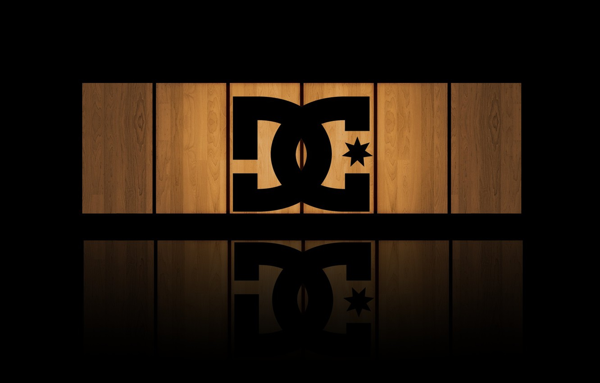

Tipo de marca que muitos queriam ser patrocinados!

Thrasher Skateboard
A Thrasher Skateboard Magazine
é uma revista de publicação mensal sobre skate,
fundada em 1981 por Kevin Thatcher e Fausto Vitello
. A revista voltada para o skate publica em suas edições,
artigos, entrevistas com skatistas profissionais.
Possui também uma premiação anual o Skater of the Year desde 1990.
Além disso a Thrasher possui canal no youtube onde posta as video part
dos melhores skatistas.

Flip Skateboards
O sonho de muitos skatistas e ter um 'pró model'
da marca o 'Luan de Oliveira' foi um dos que conseguiram realizar esse sonho.
A Flip Skateboards é uma
empresa internacional de skate dos Estados Unidos,
de propriedade de Jeremy Fox e Ian Deacon.
A empresa produz bens duros de skate, produtos leves, DVDs e acessórios.
A marca foi distribuída globalmente pela empresa americana NHS Inc. A partir de julho de 2017,
a marca é distribuída pela HLC

Nike Sb
Ele de novo, não conquistou somente a marca de shape,
mas também a mundialmente famosa NIKE,Luan teve um pro model
com a marca que não deixa a desejar por muitos ainda e cobiçado,
falando mais sobre a marca a Nike, Inc.
é uma empresa estadunidense de calçados, roupas,
e acessórios fundada em 1964 por Bill Bowerman e Phillip
Knight. A sua sede fica em Beaverton, no estado de Oregon, nos Estados Unidos.

DC Shoes
As iniciais DC, apesar de bem sugestivo,
não derivam de Danny (Way) e Colin (McKay), o
s primeiros skatistas profissionais a endossarem a marca.
A DC Shoes é uma empresa americana especializada
em calçados para esportes radicais, bem como camisas, jeans,
bonés e jaquetas. A empresa foi fundada em 1994 por Ken Block
e Damon Way, e sua sede é em Vista, Califórnia.
Seja Bem Vindo!
Esse site esta em versão beta, somente alguns usuarios podem acessar!